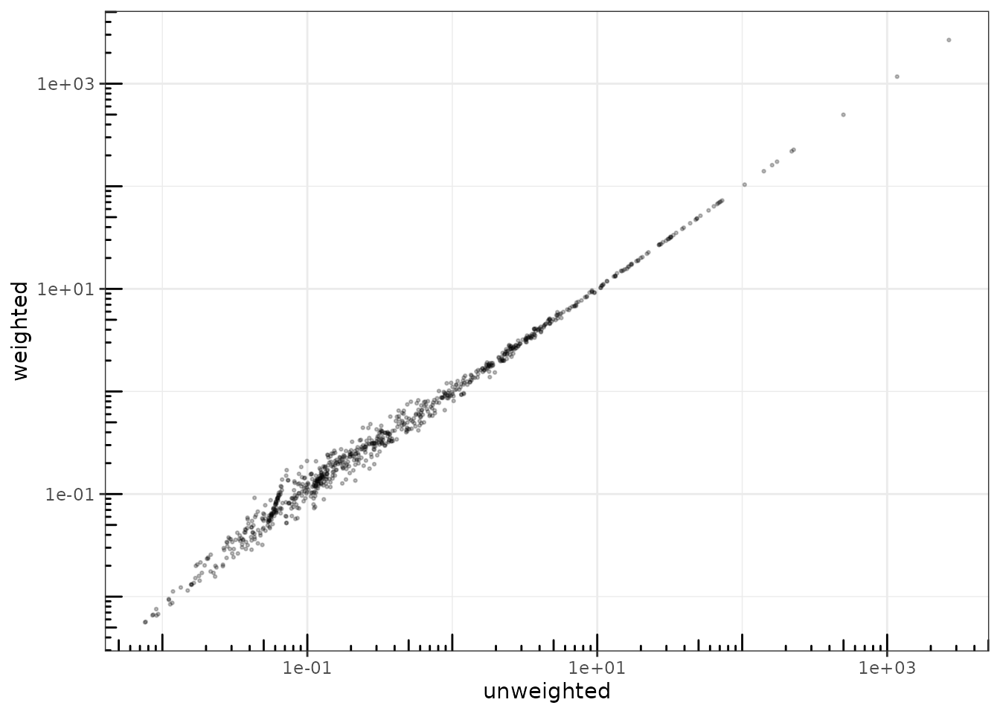

Analyzing multivariate count data with the Poisson log-normal model
PLN team
2025-07-09
Source:vignettes/PLN.Rmd
PLN.RmdPreliminaries
This vignette illustrates the use of the PLN function
and the methods accompanying the R6 class PLNfit.
From the statistical point of view, the function PLN
adjusts a multivariate Poisson lognormal model to a table of counts,
possibly after correcting for effects of offsets and covariates.
PLN is the building block for all the multivariate models
found in the PLNmodels package: having a basic
understanding of both the mathematical background and the associated set
of R functions is a good place to start.
Requirements
The packages required for the analysis are PLNmodels plus some others for data manipulation and representation:
Data set
We illustrate our point with the trichoptera data set, a full description of which can be found in the corresponding vignette. Data preparation is also detailed in the specific vignette.
data(trichoptera)
trichoptera <- prepare_data(trichoptera$Abundance, trichoptera$Covariate)The trichoptera data frame stores a matrix of counts
(trichoptera$Abundance), a matrix of offsets
(trichoptera$Offset) and some vectors of covariates
(trichoptera$Wind, trichoptera$Temperature,
etc.)
Mathematical background
The multivariate Poisson lognormal model (in short PLN, see Aitchison and Ho (1989)) relates some -dimensional observation vectors to some -dimensional vectors of Gaussian latent variables as follows
The parameter corresponds to the main effects and the latent covariance matrix describes the underlying residual structure of dependence between the variables. The following figure provides insights about the role played by the different layers
PLN: geometrical view
Covariates and offsets
This model generalizes naturally to a formulation closer to a multivariate generalized linear model, where the main effect is due to a linear combination of covariates (including a vector of intercepts). We also let the possibility to add some offsets for the variables in in each sample, that is . Hence, the previous model generalizes to
$$\begin{equation} \mathbf{Y}_i | \mathbf{Z}_i \sim \mathcal{P}\left(\exp\{\mathbf{Z}_i\}\right), \qquad \mathbf{Z}_i \sim \mathcal{N}({\mathbf{o}_i + \mathbf{x}_i^\top\mathbf{B}},\boldsymbol\Sigma), \\ \end{equation}$$ where is a matrix of regression parameters. When all individuals are stacked together, the data matrices available to feed the model are
- the matrix of counts
- the matrix of design
- the matrix of offsets
Inference in PLN then focuses on the regression parameters and on the covariance matrix .
Optimization by Variational inference
Technically speaking, we adopt in PLNmodels a variational strategy to approximate the log-likelihood function and optimize the consecutive variational surrogate of the log-likelihood with a gradient-ascent-based approach. To this end, we rely on the CCSA algorithm of Svanberg (2002) implemented in the C++ library (Johnson 2011), which we link to the package.
Analysis of trichoptera data with a PLN model
The standard PLN model described above is adjusted with the function
PLN. We now review its usage on a the trichoptera data
set.
A PLN model with latent main effects
Adjusting a fit
In order to become familiar with the function PLN and
its outputs, let us first fit a simple PLN model with just an intercept
for each species:
myPLN <- PLN(Abundance ~ 1, trichoptera)##
## Initialization...
## Adjusting a full covariance PLN model with nlopt optimizer
## Post-treatments...
## DONE!Note the use of the formula object to specify the model:
the vector
of main effects in the mathematical formulation (one per column species)
is specified in the call with the term ~ 1 in the
right-hand-side of the formula. Abundance is a variable in
the data frame trichoptera corresponding to a matrix of 17
columns and the response in the model, occurring on the
left-hand-side of the formula.
The PLNfit object
myPLN is an R6 object with class
PLNfit, which comes with a couple of methods, as recalled
when printing/showing such an object in the R console:
myPLN## A multivariate Poisson Lognormal fit with full covariance model.
## ==================================================================
## nb_param loglik BIC AIC ICL
## 170 -1130.047 -1460.852 -1300.047 -2229.083
## ==================================================================
## * Useful fields
## $model_par, $latent, $latent_pos, $var_par, $optim_par
## $loglik, $BIC, $ICL, $loglik_vec, $nb_param, $criteria
## * Useful S3 methods
## print(), coef(), sigma(), vcov(), fitted()
## predict(), predict_cond(), standard_error()See also ?PLNfit for more comprehensive information.
Field access
Accessing public fields of a PLNfit object can be done
just like with a traditional list, e.g.,
c(myPLN$loglik, myPLN$BIC, myPLN$ICL)## [1] -1130.047 -1460.852 -2229.083
myPLN$criteria## nb_param loglik BIC AIC ICL
## 1 170 -1130.047 -1460.852 -1300.047 -2229.083GLM-like interface
We provide a set of S3-methods for PLNfit that mimic the
standard (G)LM-like interface of R::stats, which we present
now.
One can access the fitted value of the counts (Abundance
–
)
and check that the algorithm basically learned correctly from the data1:
data.frame(
fitted = as.vector(fitted(myPLN)),
observed = as.vector(trichoptera$Abundance)
) %>%
ggplot(aes(x = observed, y = fitted)) +
geom_point(size = .5, alpha =.25 ) +
scale_x_log10() +
scale_y_log10() +
theme_bw() + annotation_logticks()fitted value vs. observation
The residual correlation matrix better displays as an image matrix:

Observation weights
It is also possible to use observation weights like in standard (G)LMs:
myPLN_weighted <-
PLN(
Abundance ~ 1,
data = trichoptera,
weights = runif(nrow(trichoptera)),
control = PLN_param(trace = 0)
)
data.frame(
unweighted = as.vector(fitted(myPLN)),
weighted = as.vector(fitted(myPLN_weighted))
) %>%
ggplot(aes(x = unweighted, y = weighted)) +
geom_point(size = .5, alpha =.25 ) +
scale_x_log10() +
scale_y_log10() +
theme_bw() + annotation_logticks()
Accounting for covariates and offsets
For ecological count data, it is generally a good advice to include the sampling effort via an offset term whenever available, otherwise samples are not necessarily comparable:
myPLN_offsets <-
PLN(Abundance ~ 1 + offset(log(Offset)),
data = trichoptera, control = PLN_param(trace = 0))Note that we use the function offset with a
log-transform of the total counts2 since it acts in the latent layer of the
model. Obviously the model with offsets is better since the
log-likelihood is higher with the same number of parameters3:
| nb_param | loglik | BIC | AIC | ICL |
|---|---|---|---|---|
| 170 | -1130.047 | -1460.852 | -1300.047 | -2229.083 |
| 170 | -1051.798 | -1382.603 | -1221.798 | -2214.572 |
Let us try to correct for the wind effect in our model:
##
## Initialization...
## Adjusting a full covariance PLN model with nlopt optimizer
## Post-treatments...
## DONE!When we compare the models, the gain is clear in terms of log-likelihood. However, the BIC chooses not to include this variable:
| nb_param | loglik | BIC | AIC | ICL |
|---|---|---|---|---|
| 170 | -1051.798 | -1382.603 | -1221.798 | -2214.572 |
| 187 | -1028.174 | -1392.060 | -1215.174 | -2100.579 |
Covariance models (full, diagonal, spherical)
It is possible to change a bit the parametrization used for modeling
the residual covariance matrix
,
and thus reduce the total number of parameters used in the model. By
default, the residual covariance is fully parameterized (hence
parameters). However, we can chose to only model the variances of the
species and not the covariances, by means of a diagonal matrix
with only
parameters. In an extreme situation, we may also chose a single variance
parameter for the whole matrix
.
This can be tuned in PLN with the control
argument, a list controlling various aspects of the underlying
optimization process:
myPLN_spherical <-
PLN(
Abundance ~ 1 + offset(log(Offset)),
data = trichoptera, control = PLN_param(covariance = "spherical", trace = 0)
)
myPLN_diagonal <-
PLN(
Abundance ~ 1 + offset(log(Offset)),
data = trichoptera, control = PLN_param(covariance = "diagonal", trace = 0)
)Note that, by default, the model chosen is
covariance = "spherical", so that the two following calls
are equivalents:
myPLN_default <-
PLN(Abundance ~ 1, data = trichoptera, )##
## Initialization...
## Adjusting a full covariance PLN model with nlopt optimizer
## Post-treatments...
## DONE!##
## Initialization...
## Adjusting a full covariance PLN model with nlopt optimizer
## Post-treatments...
## DONE!Different covariance models can then be compared with the usual criteria: it seems that the gain brought by passing from a diagonal matrix to a fully parameterized covariance is not worth having so many additional parameters:
rbind(
myPLN_offsets$criteria,
myPLN_diagonal$criteria,
myPLN_spherical$criteria
) %>%
as.data.frame(row.names = c("full", "diagonal", "spherical")) %>%
knitr::kable()| nb_param | loglik | BIC | AIC | ICL | |
|---|---|---|---|---|---|
| full | 170 | -1051.798 | -1382.603 | -1221.798 | -2214.572 |
| diagonal | 34 | -1109.725 | -1175.886 | -1143.725 | -2065.220 |
| spherical | 18 | -1158.526 | -1193.552 | -1176.526 | -2152.309 |
A final model that we can try is the diagonal one with the wind as a covariate, which gives a slight improvement.
myPLN_final <-
PLN(
Abundance ~ 1 + Wind + offset(log(Offset)),
data = trichoptera, control = PLN_param(covariance = "diagonal", trace = 0)
)
rbind(
myPLN_wind$criteria,
myPLN_diagonal$criteria,
myPLN_final$criteria
) %>% knitr::kable()| nb_param | loglik | BIC | AIC | ICL |
|---|---|---|---|---|
| 187 | -1028.174 | -1392.060 | -1215.174 | -2100.579 |
| 34 | -1109.725 | -1175.886 | -1143.725 | -2065.220 |
| 51 | -1073.012 | -1172.253 | -1124.012 | -1733.586 |
References
We use a log-log scale in our plot in order not to give an excessive importance to the higher counts in the fit↩︎
Note that if the offset is not computed on the same scale as the count, you might need a different transformation than the log. To ensure that the offset are on the count-scale, you can use the
scale = "count"argument inprepare_data(), see also the corresponding vignette.↩︎In PLNmodels the R-squared is a pseudo-R-squared that can only be trusted between model where the same offsets term was used↩︎